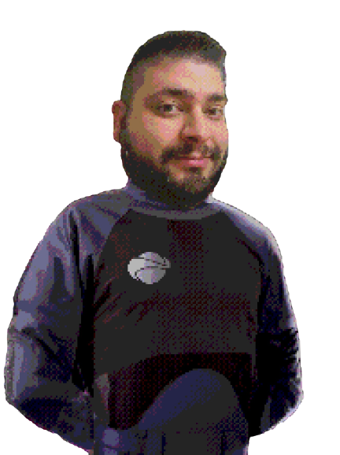

“Remember to look up at the stars and not down at your feet. Try to make sense of what you see and wonder about what makes the universe exist. Be curious. And however difficult life may seem, there is always something you can do and succeed at.
It matters that you don't just give up.”
― Stephen Hawking
